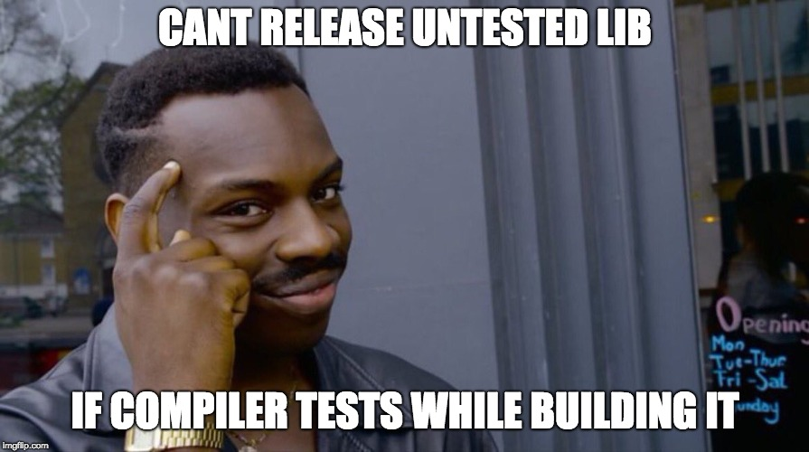

Jason Shipman
March 21, 2018

taoThe tao package was released this week and we can use it do a sort of type-level “unit testing”. The package gives us type-level assertion operators/functions. Here, we are using Nats and asserting that 3 is, in fact, 1 + 2:
unitTest :: Proxy '()
unitTest = Proxy :: Proxy (AssertEq "3 = 1 + 2" 3 (1 + 2))AssertEq is a closed type family that takes three things:
If the expected type and actual type are equal, the test passes and our code compiles! Otherwise, the code will not compile. We will see what the use of Proxy is all about, as well as why the proxy wraps the promoted unit type later in this post.
This example could be written equivalently using HUnit-inspired operators:
unitTest :: Proxy '()
unitTest = Proxy :: Proxy ("3 = 1 + 2" @<> 3 @=? 1 + 2)In this post though, we will temporarily pretend the tao package does not exist. Instead, we will implement the core portion of tao ourselves! Afterwards, we will get a feel for how to work with the package like we have in the examples above.
A core usage of tao is asserting that types are equal using AssertEq or the (@=?) operator version. The base package conveniently provides the (==) type function in the Data.Type.Equality module.
Let’s play around with type-level equality! The (==) type function is declared like this:
type family (a :: k) == (b :: k) :: BoolThis means we can give the type function two types and the result will be of kind Bool, so let’s get to it. We can load the following script directly into GHCi via stack <script_name>.hs:
#!/usr/bin/env stack
-- stack --resolver lts-11.0 --install-ghc exec ghci
{-# LANGUAGE TypeFamilies #-}
{-# LANGUAGE TypeOperators #-}
import Data.Type.Equality (type (==))
type LooksEqual = Int == Int
type LooksNotEqual = Int == BoolWe will ask GHCi what the kinds of these two type synonyms are:
ghci> :kind LooksEqual
LooksEqual :: Bool
ghci> :kind LooksNotEqual
LooksNotEqual :: BoolThis jives with the (==) type family declaration we saw above. Both type synonyms are of kind Bool. Now we can ask GHCi to evaluate the types (using kind! instead of kind):
ghci> :kind! LooksEqual
LooksEqual :: Bool
= 'True
ghci> :kind! LooksNotEqual
LooksNotEqual :: Bool
= 'FalseWe are not stuck giving types of kind * (like Bool, Char, (Int -> String), etc.) to (==) though. We can throw Nats, Symbols, and more at it!
#!/usr/bin/env stack
-- stack --resolver lts-11.0 --install-ghc exec ghci
{-# LANGUAGE DataKinds #-}
{-# LANGUAGE TypeFamilies #-}
{-# LANGUAGE TypeOperators #-}
import Data.Type.Equality (type (==))
import GHC.TypeNats (type (*))
type LooksEqual = 81 == 9 * 9
type LooksNotEqual = "haskell" == "Haskell"Let’s do our type evaluation again:
ghci> :kind! LooksEqual
LooksEqual :: Bool
= 'True
ghci> :kind! LooksNotEqual
LooksNotEqual :: Bool
= 'FalseAssertEqNow that we are familiar with the handy (==) type function, we can offload the labor for asserting type equality to it as we implement AssertEq:
#!/usr/bin/env stack
-- stack --resolver lts-11.0 --install-ghc exec ghci
{-# LANGUAGE DataKinds #-}
{-# LANGUAGE PolyKinds #-}
{-# LANGUAGE TypeFamilies #-}
{-# LANGUAGE TypeOperators #-}
{-# LANGUAGE UndecidableInstances #-}
import Data.Type.Equality (type (==))
import GHC.TypeLits (Symbol)
type family AssertEq (msg :: Symbol) (expected :: k) (actual :: k) :: () where
AssertEq m e a = AssertEq' m e a (e == a)Here we have created a type function called AssertEq that takes in a Symbol (type-level string literal), an expected type, and an actual type. The result type is of kind (). The implementation of our type function passes its input parameters as well as the (e == a) equality result type over to a yet-to-be-defined type function, AssertEq'. The intent will be that users call AssertEq and AssertEq' is an implementation detail.
Now we can define AssertEq':
#!/usr/bin/env stack
-- stack --resolver lts-11.0 --install-ghc exec ghci
{-# LANGUAGE DataKinds #-}
{-# LANGUAGE PolyKinds #-}
{-# LANGUAGE TypeFamilies #-}
{-# LANGUAGE TypeOperators #-}
{-# LANGUAGE UndecidableInstances #-}
import Data.Type.Equality (type (==))
import GHC.TypeLits (Symbol)
type family AssertEq (msg :: Symbol) (expected :: k) (actual :: k) :: () where
AssertEq m e a = AssertEq' m e a (e == a)
type family AssertEq' (msg :: Symbol) (expected :: k) (actual :: k) (result :: Bool) :: () where
AssertEq' _ _ _ 'True = '()
AssertEq' m e a 'False = -- hmmm.....From AssertEq, we are passing the result type of kind Bool from the type equality check into the the result slot of AssertEq'. In AssertEq', we have “pattern matched” on the two possible types of kind Bool - 'True and 'False. On 'True, this means the expected and actual types are equal and we return promoted unit - the assertion has passed!
The 'False case is a bit trickier. When the types are not equal, we want the assertion to fail at compile time. Fortunately, GHC provides us with something that will perfectly suit our needs: user-defined type errors via TypeError! TypeError is implemented as a type function and its declaration looks like this:
type family TypeError (a :: ErrorMessage) :: b whereThink of this function sort of like type-level undefined. Hitting undefined at runtime makes our program throw a nasty exception. Hitting a TypeError at compile time causes GHC to stop doing its thing and report the type error.
The input type we can pass to TypeError is of kind ErrorMessage. We can use the input type to build up a custom error message when the expected and actual types are not equal in AssertEq'!
#!/usr/bin/env stack
-- stack --resolver lts-11.0 --install-ghc exec ghci
{-# LANGUAGE DataKinds #-}
{-# LANGUAGE PolyKinds #-}
{-# LANGUAGE TypeFamilies #-}
{-# LANGUAGE TypeOperators #-}
{-# LANGUAGE UndecidableInstances #-}
import Data.Type.Equality (type (==))
import GHC.TypeLits (ErrorMessage((:<>:), ShowType, Text), Symbol, type TypeError)
type family AssertEq (msg :: Symbol) (expected :: k) (actual :: k) :: () where
AssertEq m e a = AssertEq' m e a (e == a)
type family AssertEq' (msg :: Symbol) (expected :: k) (actual :: k) (result :: Bool) :: () where
AssertEq' _ _ _ 'True = '()
AssertEq' m e a 'False = TypeError ( 'Text m
':<>: 'Text ": expected ("
':<>: 'ShowType e
':<>: 'Text "), actual ("
':<>: 'ShowType a
':<>: 'Text ")"
)All of the new bits we are using here - 'Text, 'ShowType, and ':<>: - are the promoted constructors from ErrorMessage. We create a TypeError that reports the user-supplied assertion failure message as well as the expected and actual types (as pretty printed by 'ShowType). The ':<>: operator smooshes together pieces of ErrorMessage on the same line.
Let’s put our new type function to work!
type MustBeEqual = AssertEq "True is True" 'True 'TrueReloading this in GHCi gives us no errors. Let’s do the kind check:
ghci> :kind! MustBeEqual
MustBeEqual :: ()The types are in fact equal, so AssertEq has returned '()! Now we will introduce a mismatching type:
type MustBeEqual = AssertEq "True is False?" 'True 'FalseReloading this in GHCi does not give us any errors. This may be surprising but just introducing the type synonym will not evaluate the type! Let’s do the kind check again:
ghci> :kind! MustBeEqual
MustBeEqual :: ()
= (TypeError ...)Hmm… two undesirable things have happened:
GHCi does not show our custom type error messageGHCi)We can address both of these problems by using a Proxy instead:
import Data.Proxy (Proxy(Proxy))
-- ...
unitTest :: Proxy '()
unitTest = Proxy :: Proxy (AssertEq "True is False?" 'True 'False)unitTest’s type is a proxy containing promoted unit. In the body of the function, we have annotated the Proxy value we are constructing using AssertEq, and AssertEq produces the promoted unit type. By using a binding like this, we are telling GHC that the type of the proxy value we are constructing should evaluate to the Proxy '() type we have annotated the whole binding with. GHC will then be forced to get evaluation-happy and see if we are telling the truth!
We will reload in GHCi again:
<script_name>.hs:28:12: error:
• True is False?: expected ('True), actual ('False)
• In the expression:
Proxy :: Proxy (AssertEq "True is False?" 'True 'False)
In an equation for ‘unitTest’:
unitTest
= Proxy :: Proxy (AssertEq "True is False?" 'True 'False)
|
28 | unitTest = Proxy :: Proxy (AssertEq "True is False?" 'True 'False)
| ^^^^^^^^^^^^^^^^^^^^^^^^^^^^^^^^^^^^^^^^^^^^^^^^^^^^^^^
Failed, no modules loaded.Much better! Now we see our custom-built type error message, and it tells us what the expected/actual types are. Woohoo - we have implemented the backbone of tao! From this point on, we will use the tao package directly.
AssertEq is the core type function in tao. The package also provides infix variants of AssertEq via (@=?) when the expected type is on the left and (@?=) when the expected type is on the right. They offload the work straight to AssertEq, so we will not implement them in this post. Assertion messages can be attached via @<> or <>@.
unitTestInfix :: Proxy '()
unitTestInfix = Proxy :: Proxy ("True is False?" @<> 'True @=? 'False)
unitTestInfix' :: Proxy '()
unitTestInfix' = Proxy :: Proxy ('False @?= 'True <>@ "True is False?")We will use the infix versions from here on out.
It is often the case that we do not just have a single unit test. Our examples so far have been of the form:
unitTest :: Proxy '()
unitTest = -- stuff...What if we have a couple tests? We could make multiple proxies:
{-# LANGUAGE DataKinds #-}
{-# LANGUAGE TypeFamilies #-}
{-# LANGUAGE TypeOperators #-}
import Data.Proxy (Proxy(Proxy))
import GHC.TypeNats (type (+), type (*))
import Tao
testAddingNats :: Proxy '()
testAddingNats = Proxy :: Proxy ("3 = 1 + 2" @<> 3 @=? 1 + 2)
testMultiplyingNats :: Proxy '()
testMultiplyingNats = Proxy :: Proxy ("3 = 1 * 3" @<> 3 @=? 1 * 3)This works, but it is fairly heavy-handed. It would be nice to instead just stuff all of our assertions in a type-level list. A first attempt might look like this:
unitTests :: Proxy '[ '(), '() ]
unitTests = Proxy :: Proxy
'["3 = 1 + 2" @<> 3 @=? 1 + 2
,"3 = 1 * 3" @<> 3 @=? 1 * 3
]This is an improvement, but now we have to add a promoted unit to the type-level list in unitTests’s type signature every time we add an assertion.
A helper called AssertAll is provided for this case:
unitTests :: Proxy '()
unitTests = Proxy :: Proxy (AssertAll
'["3 = 1 + 2" @<> 3 @=? 1 + 2
,"3 = 1 * 3" @<> 3 @=? 1 * 3
])AssertAll will squash down all the result units from assertions into a single unit. This way, we can keep on adding assertions and never have to fuss with unitTests’s type signature along the way. We can implement AssertAll like this:
type family AssertAll (xs :: [()]) :: () where
AssertAll '[] = '()
AssertAll ('() ': xs) = AssertAll xsHere we have “pattern matched” on the promoted '[] and ': constructors to traverse the type-level list, ensuring that every value is of type '().
Besides what has been shown in this post, tao also provides an AssertBool type function (plus operators) for asserting on boolean conditions. If anyone wants to get their feet wet with type-level Haskell, I recommend taking a crack at AssertBool now that we have learned how AssertEq works.
For more examples, there is a tao-example package which demonstrates testing a few more complicated type functions than the type-level natural numbers examples shown here.
There is an interesting property when doing type-level “unit testing”: our tests run every time we build the library!
